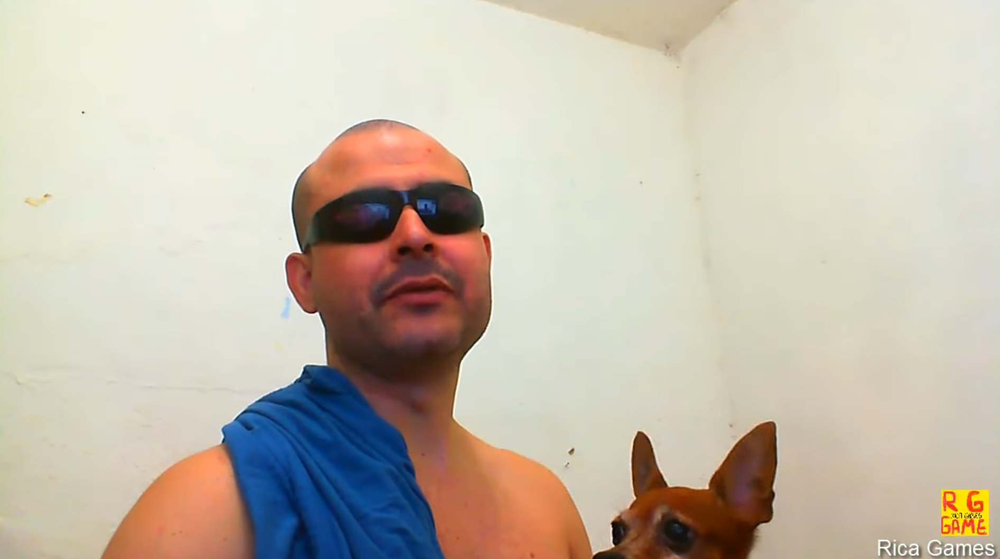

O melhor canal de games, antes. Agora não é mais!
Rica Games era um mero véio batuta que curtia videojogos e postava vídeos sobre esse tema desde 2013, o primeiro vídeo que ele aborda sobre jogos é do uniboxing do game Billions: The Game, que foi feito pela marca de desodorantes AXE. Sim, você naõ leu errado, e ainda bem que virou lost media, e sobrou só isso do game atualmente. Depois dessa, começou a postar várias gameplays de jogos de Arcade, SNES, Master System, e futuramente de Xbox 360, além de várias esquetes sobre o console que bate de frente com qualquer filme nacional produzido com dinheiro público, ele fazia até música melhor que a Pablo Vittar (Todos sobre essa frase)
Também é conhecido pela sua Magnum Opus publicado em 2 de junho de 2014 "Xbox pra Filho Machão"